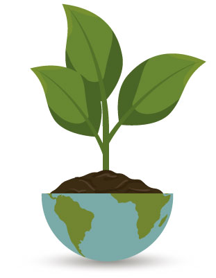
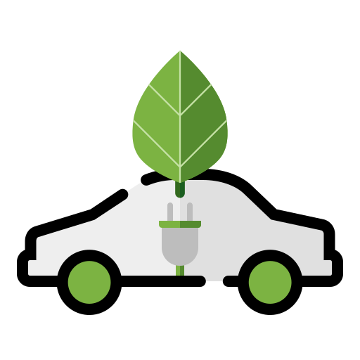

 ¿Qué es la huella de carbono?
La huella de carbono, un término que está tomando cada
vez
más relevancia en nuestro mundo enfocado en la sostenibilidad, es una poderosa herramienta
para
medir y entender el impacto ambiental de nuestras actividades cotidianas.
Se trata de
una
métrica que cuantifica la cantidad de gases de efecto invernadero que liberamos a la
atmósfera,
principalmente dióxido de carbono, al llevar a cabo diversas acciones, como conducir un
automóvil, consumir energía o incluso la producción de alimentos.
En resumen, la
huella de
carbono es un espejo que refleja nuestro compromiso con el planeta y nos permite tomar
decisiones más conscientes para reducir nuestro impacto, contribuyendo así a un futuro más
limpio y sostenible para las generaciones venideras.
Descubrir y comprender tu propia huella de carbono es el primer paso hacia un estilo de vida
más
ecológico y respetuoso con el entorno. Al tomar medidas para reducir tu huella de carbono,
estás
contribuyendo activamente a la lucha contra el cambio climático y ayudando a preservar
nuestro
hermoso planeta para las generaciones futuras.
¿Qué son los gases del efecto invernadero?
Los gases de efecto invernadero son elementos cruciales
en
la regulación del clima de nuestro planeta. Estos gases, que incluyen dióxido de carbono
(CO2),
metano (CH4), óxido nitroso (N2O) y vapor de agua, entre otros, actúan como una manta
invisible
que envuelve la Tierra, atrapando el calor del sol y manteniendo la temperatura en un rango
adecuado para la vida.
Sin embargo, cuando la concentración de estos gases aumenta
debido a
actividades humanas, como la quema de combustibles fósiles y la deforestación, el equilibrio
se
desestabiliza.
El problema radica en que un exceso de gases de efecto invernadero amplifica el efecto
invernadero natural, causando un aumento de la temperatura global, conocido como el cambio
climático. Este fenómeno conlleva consecuencias alarmantes, como el deshielo de glaciares,
el
aumento del nivel del mar, eventos climáticos extremos y la alteración de ecosistemas. Por
tanto, la comprensión de los gases de efecto invernadero y sus efectos es esencial para
abordar
el desafío del cambio climático y tomar medidas para reducir sus emisiones.
 Maneras de reducir la huella de carbono
- Usar el transporte público o compartir viajes: Reducir el uso del automóvil personal disminuye las emisiones de carbono.
- Optar por vehículos eficientes en consumo de combustible o vehículos eléctricos: Son menos contaminantes y más eficientes.
- Reducir, reutilizar y reciclar: Minimizar el desperdicio y reciclar materiales disminuye la demanda de recursos y reduce emisiones.
- Optar por fuentes de energía renovable: Usar energía solar o eólica en casa disminuye la dependencia de combustibles fósiles.
- Mejorar la eficiencia energética: Aislar la vivienda y usar electrodomésticos eficientes reduce el consumo de energía.
- Consumir alimentos locales y de temporada: Reduce la huella de carbono del transporte de alimentos.
- Reducir el consumo de carne y lácteos: La producción de carne emite grandes cantidades de gases de efecto invernadero.
- Minimizar el desperdicio de alimentos: Aprovechar al máximo los alimentos reduce emisiones relacionadas con su producción y transporte.
- Plantar árboles y vegetación: Los árboles capturan CO2 y mejoran la calidad del aire.
- Apoyar políticas y prácticas sostenibles: Participar en actividades de sensibilización y apoyar leyes y regulaciones que fomenten la sostenibilidad.
Estas acciones pueden ayudar a reducir significativamente tu huella de carbono y contribuir a la protección del medio ambiente.
¿Cómo afecta la deforestación a las emisiones de gases de efecto invernadero?
Las emisiones de gases de efecto invernadero pueden aumentar debido a la deforestación y la degradación forestal, ya que los árboles absorben dióxido de carbono. La pérdida de bosques disminuye la capacidad del planeta para capturar carbono, lo que conduce a un aumento en las emisiones y, por lo tanto, a una huella de carbono más alta.
Tecnologías de captura y almacenamiento de carbono
Las tecnologías de captura y almacenamiento de carbono
(CAC) desempeñan un papel crucial en la lucha contra el cambio climático. Estas soluciones
innovadoras se centran en la reducción de las emisiones de dióxido de carbono (CO2), un gas
de
efecto invernadero, en sectores clave como la producción de energía, la industria y el
transporte.
La captura de carbono implica la extracción de CO2 de fuentes industriales y de energía
antes de
que se libere a la atmósfera. Esto se logra mediante tecnologías avanzadas, como la captura
postcombustión, precombustión y la captura directa del aire. Una vez capturado, el CO2 se
transporta y almacena de manera segura en formaciones geológicas subterráneas, como antiguos
depósitos de petróleo y gas.
El CAC es una estrategia prometedora para reducir las emisiones de carbono, especialmente en
industrias donde la electrificación completa o la transición a fuentes de energía bajas en
carbono no es factible en el corto plazo. Sin embargo, es importante destacar que, si bien
estas
tecnologías pueden desempeñar un papel importante, no deben considerarse como una solución
única
para abordar el cambio climático. Complementan otras medidas clave, como el aumento de la
eficiencia energética, la transición a energías renovables y la reducción del consumo de
energía. Además, se deben abordar desafíos significativos relacionados con la viabilidad
económica y la seguridad de la captura y el almacenamiento de carbono a gran escala para que
estas tecnologías alcancen su máximo potencial en la mitigación del cambio climático.
Huella de carbono en los alimentos
La huella de carbono de los alimentos es una medida que evalúa las emisiones de gases de efecto invernadero asociadas a la producción, transporte y consumo de alimentos. Tanto los alimentos de origen vegetal como los de origen animal tienen huellas de carbono, pero varían significativamente debido a factores como el tipo de alimento, las prácticas agrícolas y la cadena de suministro. Aquí te proporciono una visión general de la huella de carbono en alimentos vegetales y animales:
- Los alimentos vegetales, como frutas, verduras, legumbres y granos, tienden a tener una huella de carbono más baja en comparación con los alimentos de origen animal. Esto se debe en parte a que las plantas absorben dióxido de carbono de la atmósfera durante su crecimiento.
- Sin embargo, la huella de carbono de los alimentos vegetales puede variar según las prácticas agrícolas. Por ejemplo, la agricultura intensiva con uso excesivo de fertilizantes y pesticidas puede aumentar las emisiones de gases de efecto invernadero.
- El transporte de alimentos vegetales a largas distancias puede agregar emisiones, pero en general, estos alimentos suelen ser más eficientes en términos de emisiones de carbono en comparación con los alimentos de origen animal.
Alimentos de origen vegetal:
- Los alimentos de origen animal, como carne, leche y huevos, tienden a tener una huella de carbono más alta debido a las emisiones de gases de efecto invernadero asociadas a la cría de animales, la alimentación de ganado y la gestión de estiércol.
- Los productos cárnicos, en particular, tienen una alta huella de carbono debido al mayor consumo de recursos y al tiempo necesario para criar y engordar animales antes de la producción de carne.
- La elección de la fuente animal puede marcar la diferencia. Por ejemplo, la carne de res tiende a tener una huella de carbono más alta que la carne de pollo o cerdo debido a la mayor eficiencia de conversión de alimento en proteína.
Alimentos de origen animal:
En general, las tendencias actuales en la agricultura y la conciencia ambiental están llevando a un aumento en la producción y el consumo de alimentos vegetales como una estrategia para reducir la huella de carbono en la alimentación. Además, la elección de alimentos producidos localmente y la reducción del desperdicio de alimentos son prácticas que pueden contribuir a una menor huella de carbono en la dieta personal.
 ¿Cómo afecta el
consumo excesivo de agua potable a la
huella
de carbono?
¿Cómo afecta el
consumo excesivo de agua potable a la
huella
de carbono?
El consumo excesivo de agua potable, por sí mismo, no
tiene
un impacto directo en la huella de carbono, ya que la huella de carbono se refiere
específicamente a las emisiones de gases de efecto invernadero asociadas a la producción,
transporte y consumo de bienes y servicios. Sin embargo, el consumo excesivo de agua potable
puede tener impactos ambientales que están interconectados con la huella de carbono en
ciertos
aspectos. Aquí te explico cómo afecta el consumo excesivo de agua potable en relación con la
huella de carbono:
Impacto en la producción de alimentos: El cultivo de alimentos es una de
las
actividades que más
agua consume en el mundo. El uso excesivo de agua para la irrigación de cultivos puede
agotar
recursos hídricos locales y contribuir a la escasez de agua en ciertas regiones. Cuando se
trata
de la huella de carbono, esto puede relacionarse con el hecho de que la producción de
alimentos
requiere energía para el bombeo de agua, lo que puede generar emisiones de carbono si la
fuente
de energía es principalmente de combustibles fósiles.
Desperdicio de alimentos: El consumo excesivo de agua también se relaciona
con
el desperdicio de
alimentos. Cuando se desperdician alimentos, no solo se desperdicia el agua utilizada en su
producción, sino también la energía y los recursos asociados con su transporte y
almacenamiento.
El desperdicio de alimentos puede contribuir a una mayor huella de carbono debido a la
energía
consumida en la producción y distribución de alimentos que nunca se consumen.
Impactos en ecosistemas y biodiversidad: El consumo excesivo de agua
potable,
particularmente en
la agricultura, puede llevar a la extracción insostenible de agua de fuentes naturales, lo
que
puede dañar los ecosistemas acuáticos y la biodiversidad. Estos impactos pueden afectar la
salud
de los ecosistemas, que desempeñan un papel en la captura y almacenamiento de carbono, y en
última instancia, pueden tener consecuencias para la mitigación del cambio climático.
En resumen, aunque el consumo excesivo de agua potable en sí mismo no afecta directamente la
huella de carbono, está relacionado con factores que pueden influir en las emisiones de
gases de
efecto invernadero, como el uso de energía para la irrigación de cultivos y el desperdicio
de
alimentos. Además, los impactos ambientales asociados con el consumo excesivo de agua pueden
tener implicaciones más amplias en la salud del planeta y su capacidad para abordar el
cambio
climático. Por lo tanto, es importante considerar la sostenibilidad del agua en un contexto
más
amplio de la sostenibilidad ambiental y climática.
¿Cómo pueden las acciones individuales reducir la huella de carbono?
Eficiencia energética: Reducir el consumo de energía en
el
hogar es una de las formas más efectivas de reducir la huella de carbono. Esto incluye el
uso de
iluminación LED, la instalación de sistemas de calefacción y refrigeración eficientes, y la
reducción de pérdidas de energía a través del aislamiento adecuado de la vivienda.
Transporte sostenible: Optar por medios de transporte sostenibles, como
caminar, andar en bicicleta, utilizar el transporte público o compartir vehículos, puede
reducir
significativamente las emisiones de carbono relacionadas con los desplazamientos diarios.
Elección de alimentos: Reducir el consumo de carne y productos de origen
animal en favor de una dieta basada en plantas puede disminuir la huella de carbono
personal, ya
que la producción de carne y lácteos a menudo genera más emisiones de gases de efecto
invernadero.
Reducción de desperdicio de alimentos: El desperdicio de alimentos
contribuye
a la huella de carbono, ya que se desperdician los recursos utilizados en la producción,
transporte y procesamiento de alimentos. Comprar conscientemente, planificar comidas y
reducir
el desperdicio puede marcar la diferencia.
Reciclaje y reducción de residuos: El reciclaje y la reducción de residuos
sólidos contribuyen a la reducción de las emisiones de carbono al disminuir la cantidad de
residuos enviados a vertederos, que generan metano, un potente gas de efecto invernadero.
Uso de energías renovables: Si es posible, instalar sistemas de energía
solar
o eólica en el hogar puede ayudar a reducir la dependencia de combustibles fósiles y
disminuir
la huella de carbono personal.
Conservación del agua: Utilizar el agua de manera eficiente y reducir el
consumo de agua caliente puede disminuir la huella de carbono al reducir la energía
necesaria
para calentar y transportar el agua.
Compra consciente: Elegir productos y servicios con una huella de carbono
baja,
como productos locales y sostenibles, puede alentar a las empresas a adoptar prácticas más
ecológicas.
Participación activa: Involucrarse en acciones y proyectos comunitarios
relacionados con la sostenibilidad y el medio ambiente, como la reforestación o la limpieza
de
playas, puede contribuir a la reducción de la huella de carbono y crear conciencia en la
comunidad.
Compensación de carbono: Si es difícil evitar ciertas emisiones, como
viajar en
avión, algunas personas optan por compensar su huella de carbono apoyando proyectos de
reforestación o de energía limpia.
En general, las acciones individuales pueden marcar la diferencia en la reducción de la
huella
de carbono y la promoción de un estilo de vida más sostenible. Además, pueden influir en las
decisiones de las empresas y gobiernos para adoptar prácticas más respetuosas con el medio
ambiente y avanzar hacia un futuro más limpio y sostenible.